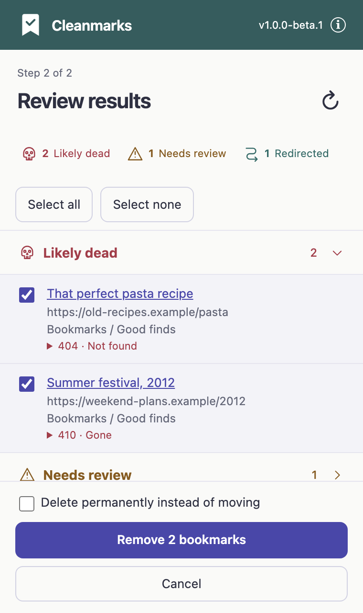

A fresh start for your bookmarks.
Keep the good finds. Clear out the dead ends. Cleanmarks helps you give your browser’s bookmarks a little breathing room.
Free beta. No account needed.
Firefox and Chrome first. Safari is on the list.
Store links will appear here as each version is ready.
Two keepers. Two dead ends. A fresh start waiting.
An illustrative demo, not your bookmarks. Selected dead ends move to Deleted Bookmarks.
Less clutter.
More “glad I saved that.”
You collected those links for a reason. Find out what still works, then decide what stays.
Start with one folder.
Choose the bookmark folders you want to check. No need to tackle everything at once.
See what needs a second look.
Spot broken links, pages that have moved, and sites that need another look. Automated checks can be wrong, so you make the call.
You choose. Then tidy.
Review and select results before cleanup. By default, they move to a Deleted Bookmarks folder. Permanent deletion is optional.

A few things worth keeping in mind.
Will it delete anything automatically?
No. You review and select results before cleanup. The default moves selected bookmarks to a Deleted Bookmarks folder; permanent deletion is an option you choose.
Where do my bookmarks go during a check?
There’s no Cleanmarks account or backend. Checks contact the bookmarked sites directly to see how they respond. Those sites receive network requests, just as they do when a link is visited.
Does “Likely dead” mean gone for good?
Not always. A site might block automated requests, be temporarily unavailable, or need a login. Check anything important yourself before removing it.
What do the result labels mean?
Likely dead means a page reported it was missing. Needs review means the check wasn’t conclusive. Redirected means the link led somewhere else. You decide which bookmarks to keep.